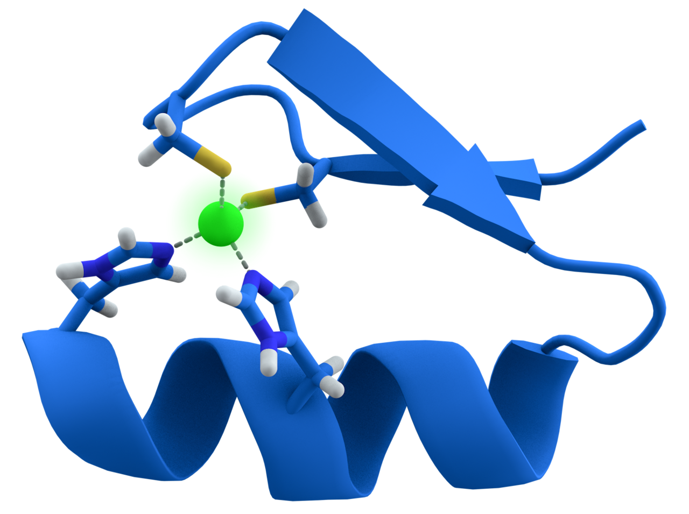

💪 Sức khỏe Nam giới
Nutrition — Micronutrients & Male HormonesDeep dive⏱ 8 phút đọc
Kẽm & Vitamin D: Vi Chất Tối Cần Thiết Cho Tế Bào Leydig & Thụ Thể Androgen
Trong thế giới dinh dưỡng vi lượng, không có hai yếu tố nào tác động trực tiếp lên hệ sinh dục nam giới mạnh mẽ bằng Kẽm và Vitamin D. Nghiên cứu kinh điển của Giáo sư Ananda Prasad phát hiện: Hạn chế kẽm trong chế độ ăn chỉ sau vài tuần đã khiến nồng độ testosterone của nam giới khỏe mạnh giảm tới gần 50%. Khám phá vai trò sinh học của hai 'hormone steroid ngoại sinh' này và cách bổ sung chuẩn y khoa.
Nguồn nghiên cứu & Thiết bị: Nutrition & Hormone and Metabolic Research ↗•Màn hình App: Micronutrients & Endocrine Health Screen•Chỉ số: Leydig Cell Steroidogenesis, VDR Nuclear Receptors & Zinc Homeostasis
💡Điểm Cốt Lõi & Hành Động Thực Tế
Kẽm là thành phần cốt lõi của hơn 300 enzyme và cấu trúc ngón tay kẽm (Zinc Fingers) của thụ thể Androgen; trong khi Vitamin D hoạt động như một hormone tiền chất kích hoạt thụ thể VDR tại tinh hoàn. Bổ sung 15–30mg Kẽm Bisglycinate và 2.000–4.000 IU Vitamin D3 hàng ngày là chiến lược phục hồi nội tiết đơn giản và hiệu quả nhất.
Công Trình Của Ananda Prasad: Thiếu Kẽm Làm Tụt 50% Testosterone
Trong một nghiên cứu lâm sàng mang tính cột mốc xuất bản trên tạp chí Nutrition (Prasad et al., 1996), các nhà khoa học đã tiến hành theo dõi nồng độ hormone của hai nhóm nam giới:
1. Nhóm nam thanh niên khỏe mạnh (tuổi 20–35): Bị hạn chế lượng kẽm nạp vào trong khẩu phần ăn trong 20 tuần. Kết quả: Nồng độ Testosterone toàn phần trong huyết thanh đã tụt dốc thê thảm từ mức 39.9 nmol/L xuống chỉ còn 19.3 nmol/L (giảm hơn 51%)!
2. Nhóm nam giới cao tuổi bị thiếu kẽm nhẹ: Được bổ sung kẽm sulfat trong 6 tháng. Kết quả: Nồng độ testosterone của họ tăng gần gấp đôi từ 8.3 nmol/L lên 16.0 nmol/L.
Tại sao kẽm lại có sức mạnh khủng khiếp như vậy?
- Enzyme 17β-HSD: Đây là enzyme cuối cùng tại tế bào Leydig xúc tác chuyển hóa Androstenedione thành Testosterone. Enzyme này phụ thuộc hoàn toàn vào các ion Kẽm (Zn²⁺) để hoạt động.
- Cấu Trúc Ngón Tay Kẽm (Zinc Finger Motifs): Để phân tử Testosterone sau khi gắn vào thụ thể Androgen có thể đi vào nhân tế bào và kích hoạt gen phát triển cơ bắp, nó bắt buộc phải dựa vào cấu trúc gập protein đặc biệt được cố định bởi nguyên tử Kẽm. Thiếu kẽm, thụ thể androgen trở nên "mù điếc" trước tín hiệu hormone.

📊 Sơ đồ y khoa: Mô hình không gian ngón tay kẽm (Zinc Finger): Ion kẽm điều phối cấu trúc không gian giúp thụ thể androgen liên kết DNA và khởi động phiên mã gen. Nguồn sơ đồ: Wikimedia Commons ↗
Vitamin D: Một Secosteroid Quyền Năng, Không Phải Một Loại Vitamin Thông Thường
Về bản chất sinh học, Vitamin D thực chất là một hormone secosteroid có cấu trúc tương tự testosterone và cortisol.
Nghiên cứu của Đại học Y Graz (Pilz et al., Hormone and Metabolic Research 2011) trên 165 nam giới tham gia thử nghiệm ngẫu nhiên có đối chứng mù đôi (RCT) đã chứng minh:
- Nhóm nam giới bổ sung 3.332 IU Vitamin D3 mỗi ngày trong 1 năm có mức tăng nồng độ Testosterone toàn phần từ 10.7 nmol/L lên 13.4 nmol/L (+25%) và tăng Free Testosterone đáng kể so với nhóm dùng giả dược (Placebo).
- Các thụ thể Vitamin D (VDR) và enzyme chuyển hóa vitamin D biểu hiện với mật độ rất dày đặc tại các tế bào Leydig, tế bào mầm và ống sinh tinh ở tinh hoàn, chứng minh Vitamin D tham gia trực tiếp vào việc điều hòa quá trình sinh tinh và sản xuất androgen.
Vitamin D2 (Ergocalciferol - nguồn gốc thực vật kém hiệu quả hơn)
2.000 – 4.000 IU
Bắt buộc uống cùng bữa ăn có chất béo; xét nghiệm nồng độ 25(OH)D máu để giữ mức tối ưu 40–60 ng/mL.
Magie (Đồng Yếu Tố)
Magnesium Glycinate hoặc Malate
Magnesium Oxide (Chỉ có tác dụng nhuận tràng, hấp thu <4%)
300 – 400 mg
Uống buổi tối trước khi ngủ; giúp chuyển hóa Vitamin D thành dạng hoạt tính 1,25(OH)₂D.
Giao Thức 4 Bước Tối Ưu Vi Chất Cho Nội Tiết Phái Mạnh
Xét Nghiệm Máu Định Lượng Nền Tảng: Đo nồng độ 25-Hydroxyvitamin D [25(OH)D] và Kẽm huyết thanh. Nếu Vitamin D dưới 30 ng/mL, bạn đang ở trạng thái suy giảm cần phác đồ bù liều tấn công.
Tắm Nắng 15–20 Phút Vào Giữa Trưa: Ánh sáng mặt trời chứa tia UVB (từ 10:00 đến 14:00) kích thích tổng hợp Vitamin D3 tự nhiên dưới da mà không lo độc tính quá liều.
Ưu Tiên Nguồn Thực Phẩm Giàu Kẽm Tự Nhiên: Hàu biển (chứa lượng kẽm kỷ lục ~50mg/100g), thịt bò nạc, lòng đỏ trứng, hạt bí ngô và thịt gia cầm sẫm màu.
Tránh Bổ Sung Kẽm Liều Siêu Cao Kéo Dài: Không uống các loại viên kẽm 50–100mg liên tục quá 3 tháng nếu không có chỉ định y khoa. Dư thừa kẽm ức chế hấp thu đồng và sắt, gây ức chế hệ miễn dịch và làm giảm cholesterol tốt HDL.
Pilz, S., Frisch, S., et al. (2011).Effect of vitamin D supplementation on testosterone levels in men. Hormone and Metabolic Research, 43(3), 223–225. Báo Cáo Nghiên Cứu Gốc (NCBI PubMed: 21154383) ↗
Fallah, A., Mohammad-Hasani, A., & Colagar, A. H. (2018).Zinc is an essential element for male fertility: a review of Zn roles in men's health, germination, sperm quality, and fertilization. Journal of Reproduction & Infertility. Tài Liệu Nghiên Cứu Gốc Xác Thực ↗
Blomberg Jensen, M. (2014).Vitamin D and male reproduction. Nature Reviews Endocrinology, 10(3), 175–186. Tạp chí Nature (PMID: 24419359) ↗
📚
Nguồn Tham Khảo Y Khoa & Nghiên Cứu Gốc
Bài viết này được tổng hợp và kiểm chứng từ các nghiên cứu y sinh học, hướng dẫn lâm sàng và tài liệu khoa học thiết bị đeo của Nutrition & Hormone and Metabolic Research.
💪 Men's Health
Nutrition — Micronutrients & Male HormonesDeep dive⏱ 8 min read
Zinc and Vitamin D: Essential Micronutrients for Leydig Cell Function & Androgen Receptors
In micronutrient physiology, no two elements exert more profound direct control over the male gonadal axis than Zinc and Vitamin D. A seminal clinical trial by Dr. Ananda Prasad revealed that dietary zinc restriction slashed serum testosterone by nearly 50% in healthy young men within just 20 weeks. Discover the cellular mechanics of these essential steroidal cofactors and clinical dosing rules.
Clinical & Wearable Source: Nutrition & Hormone and Metabolic Research ↗•Mapped Screen: Micronutrients & Endocrine Health Screen•Biometric: Leydig Cell Steroidogenesis, VDR Nuclear Receptors & Zinc Homeostasis
💡Key Actionable Takeaway
Zinc serves as a mandatory structural cofactor for over 300 enzymes and the zinc fingers of androgen receptors, while Vitamin D operates as a nuclear secosteroid activating testicular VDRs. Daily supplementation with 15–30mg Zinc Bisglycinate and 2,000–4,000 IU Vitamin D3 offers foundational, cost-effective endocrine support.
The Prasad Trial: Dietary Zinc Restriction Slashes Testosterone by 50%
In a seminal clinical study published in Nutrition (Prasad et al., 1996), researchers tracked serum androgens across two cohorts:
1. Healthy Young Males (Aged 20–35): Placed on a zinc-restricted diet for 20 weeks. Results: Total serum testosterone plummeted from 39.9 nmol/L down to 19.3 nmol/L (a staggering 51% reduction)!
2. Marginally Zinc-Deficient Elderly Men: Provided zinc sulfate supplementation for 6 months. Results: Serum testosterone nearly doubled from 8.3 nmol/L to 16.0 nmol/L.
Why is zinc so biochemically indispensable?
- 17β-HSD Enzyme: The final step converting androstenedione to testosterone in Leydig cells is catalyzed by zinc-dependent enzymes (Zn²⁺).
- Zinc Finger Motifs: For testosterone to bind and activate androgen receptors within the cell nucleus, the receptor must fold around structural zinc ions. Without zinc, androgen receptors become functionally deaf to circulating hormones.
📊 Scientific Figure: Rendered zinc finger protein domain: Zinc coordination enables androgen receptor DNA binding and target gene activation. Diagram source: Wikimedia Commons ↗
Vitamin D: A Nuclear Secosteroid, Not a Common Vitamin
Vitamin D is structurally a secosteroid hormone identical in backbone to testosterone and cortisol.
A randomized, double-blind placebo-controlled trial from the Medical University of Graz (Pilz et al., Hormone and Metabolic Research 2011) in 165 men demonstrated:
- Men supplementing 3,332 IU Vitamin D3 daily for 1 year achieved a significant increase in total testosterone (from 10.7 to 13.4 nmol/L, +25%) and free testosterone compared to placebo.
- Vitamin D receptors (VDR) are densely expressed throughout human Leydig cells, germ cells, and mature spermatozoa, demonstrating direct gonadal involvement.
Take with meals; add 1–2mg Copper if supplementing >30mg long term.
Vitamin D
Vitamin D3 (Cholecalciferol) + K2 (MK-7)
Vitamin D2 (Ergocalciferol)
2,000 – 4,000 IU
Ingest with dietary fats; test 25(OH)D blood levels aiming for 40–60 ng/mL.
Magnesium (Cofactor)
Magnesium Glycinate or Malate
Magnesium Oxide (Poor absorption, laxative)
300 – 400 mg
Ingest before bed; required to convert Vitamin D into its active form 1,25(OH)₂D.
4-Step Practical Protocol for Micronutrient Optimization
Test Baseline Serum Biomarkers: Test 25-Hydroxyvitamin D [25(OH)D] and Serum Zinc. If 25(OH)D is under 30 ng/mL, implement a structured repletion protocol.
Capture 15–20 Minutes of Midday Sunlight: Expose skin to natural UVB sunlight between 10:00 and 14:00 to synthesize endogenous Vitamin D3 safely.
Prioritize Zinc-Dense Whole Foods: Oysters (~50mg zinc/100g), grass-fed beef, eggs, and raw pumpkin seeds.
Avoid Chronic Megadosing: Never consume 50–100mg zinc daily for months without medical supervision; excess zinc depletes copper and iron, causing anemia and lowering HDL.
Clinical References & Scientific Sources
Prasad, A. S., et al. (1996).Zinc status and serum testosterone levels of healthy adults. Nutrition, 12(5), 344–348. View on PubMed ↗
Pilz, S., Frisch, S., et al. (2011).Effect of vitamin D supplementation on testosterone levels in men. Horm Metab Res, 43(3), 223–225. View on PubMed ↗
Fallah, A., et al. (2018).Zinc is an essential element for male fertility. J Reprod Infertil. View on PMC ↗
Blomberg Jensen, M. (2014).Vitamin D and male reproduction. Nat Rev Endocrinol, 10(3), 175–186. View on Nature ↗
📚
Clinical Reference & Scientific Backing
This article is synthesized from peer-reviewed medical literature, clinical guidelines, and wearable biometric validation studies from Nutrition & Hormone and Metabolic Research.